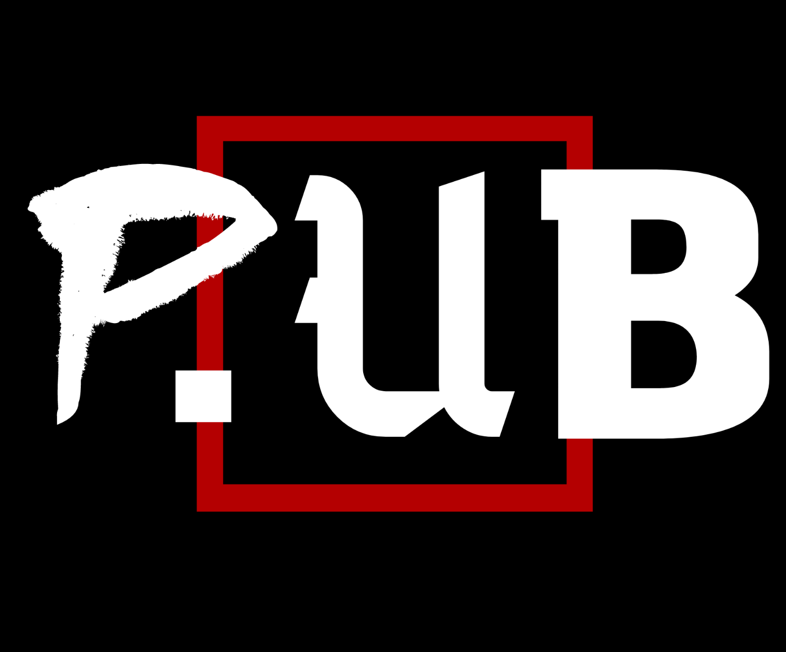

P.UB Project
Задача проекта P.UB создать удобную, децентрализованную, масштабную платформу, в которой Человеку не прийдётся жертвовать ни своими свободами и в то же время, ему не прийдётся отказываться от удобства, стоящими за благами цивилизации и технологий, сегодня... выкупленными гигантами.